Strategy Game Algorithms in Avalon
Making AI think Strategically
The AI in a strategy game needs to coordinate all of its fleets, resources, and planets to work together to achieve diplomatic and military objectives collectively. We can do this by creating a bunch of low-level state machine AIs which handle the individual tasks that the AI needs to interact with, and having these machines work mostly independently, but sharing enough state to not conflict in their tasks with each other.
For example, one AI will handle the budget, one AI will handle recruiting and disbanding ships so they approximately match military budget goals set previously. One AI will handle the non-major fleets which are to be merged into the major ones, and the major fleets will act more or less independently, except for knowing the other fleets' objectives so that multiple fleets wont have the same task (capturing territory, attacking an enemy fleet, defending friendly territory, recapturing territory, running away, repairing).
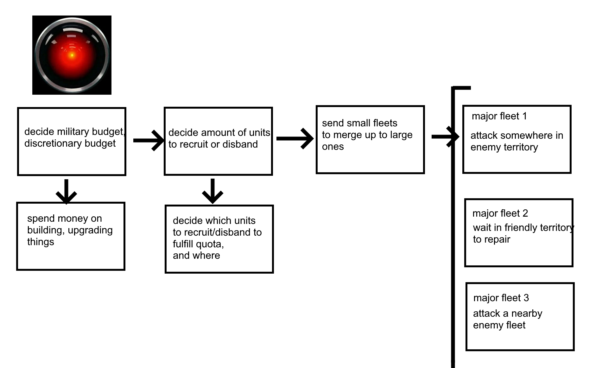The AIs can be updated in a stochastic manner, with each function having a parameter of "time Passed". So if one government isn't at war, we might refresh it only every 100 turns with "timePassed=100", and if one government is at war with the player, we might refresh it every 10 turns since it's more important for it to function well, and it justifies using more computational resources. The timePassed parameter will scale the odds of things happening (like searching for an alliance), so behavior is approximately the same. What's more, we can scale the AI's "intelligence" by picking between the optimal solution and a "naive" solution to a given problem; we always pick the optimal solution when intelligence=1, and pick the naive solution half of the time when intelligence=0.5.
Graphics
In most strategy games, we start first with a mathematical graph with Nodes and Edges. To display the territory (nodes) we control, we want to give each node a "border" that we can color in. We will build procedural border meshes using a Delaunay Triangulation, from which we get a Voronoi Diagram. We do this using the Bowyer-Watson algorithm which is \(O(n^2)\), but can be \(O(n \log n)\) in amortized complexity
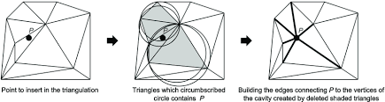The Voronoi Diagram consists of convex polygons such that the edges are equally distant from the two nodes they neighbor.
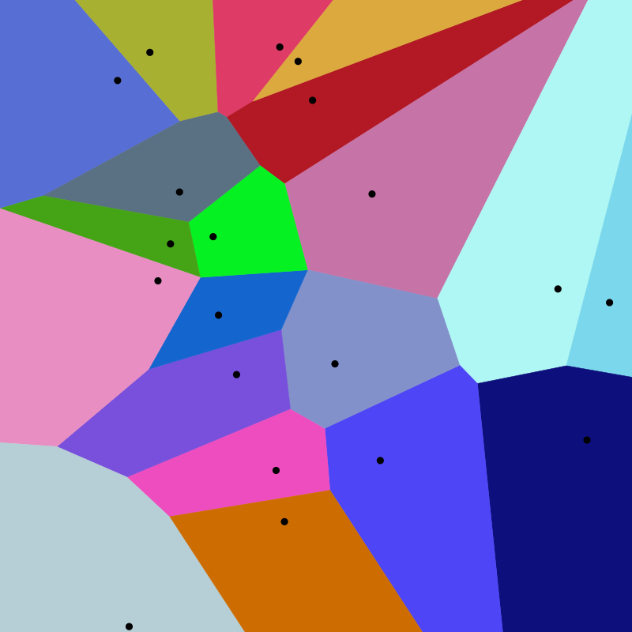Since each Voronoi cell is convex, we can sort the vertices by their interior angle, and triangulate it just by walking around it and building triangles along the way.
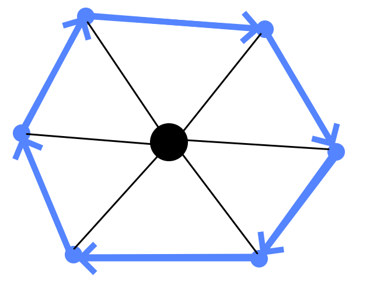So for each government, we can color in the voronoi cells of the nodes they control. This gives us something like this:
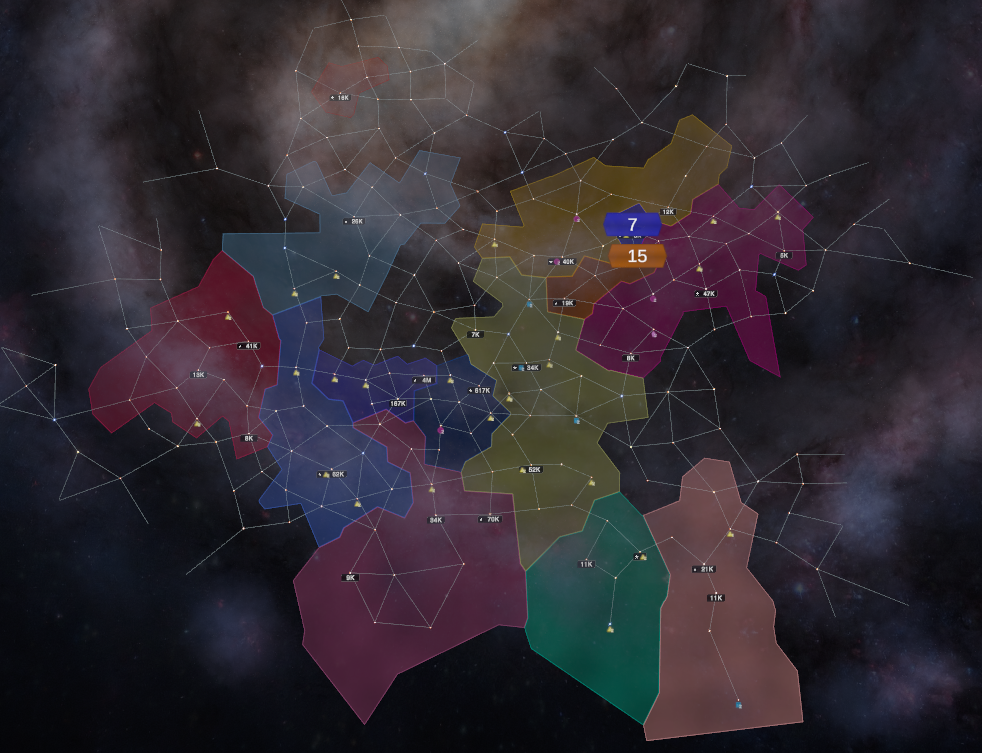But in addition to this, we need to create a border outline over each connected component of the map to show the shapes more clearly
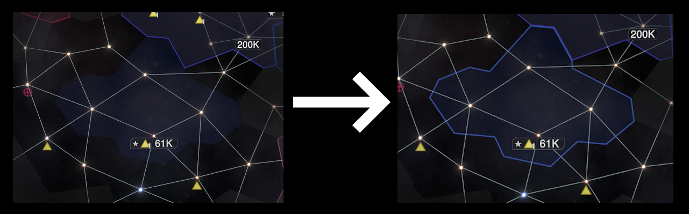So we split each government's territory into connected components, then remove the inner edges of the resulting polygon.
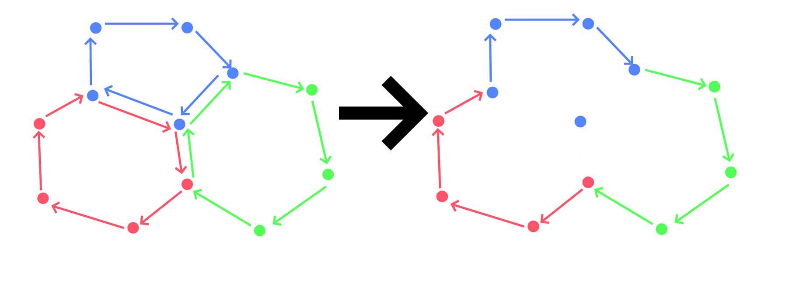We move across the resulting polygon, building a procedural mesh along the way by making rectangles which are parallel to the lines but face inwards. We sometimes also need to add triangles inside to make the mesh smooth when the internal angles are high (pictured)
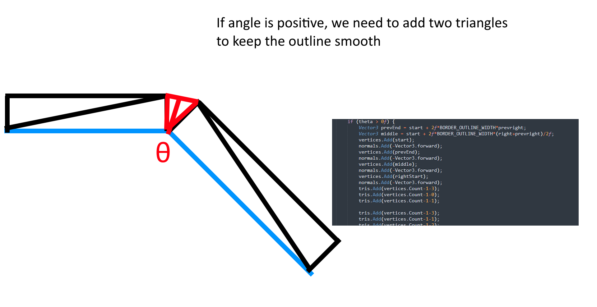Territory-Changing Algorithms
One aspect of strategy games is how to get the AI to decide where and how it wants to expand its territory. For example, let's take the classic game of Risk where you attack only adjacent provinces with your armies
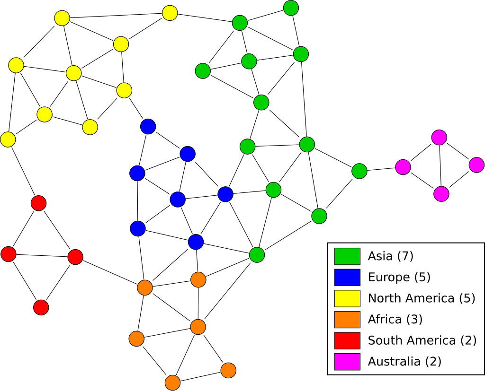Beyond just expanding, you should maximize your territory's outward-facing edges while minimizing the number of nodes on your borders, because if you have a province that can attack three other provinces, then your opponent must defend three times more territory than you need to. This is in some sense the two-dimensional analogue of biological organisms maximizing their surface-area-to-volume ratio in order to consume more food with the smallest upkeep.
One problem which should be minimized is the creation of "border gore", where territories are split into many different connected subgraphs, making the display more confusing for the viewer.
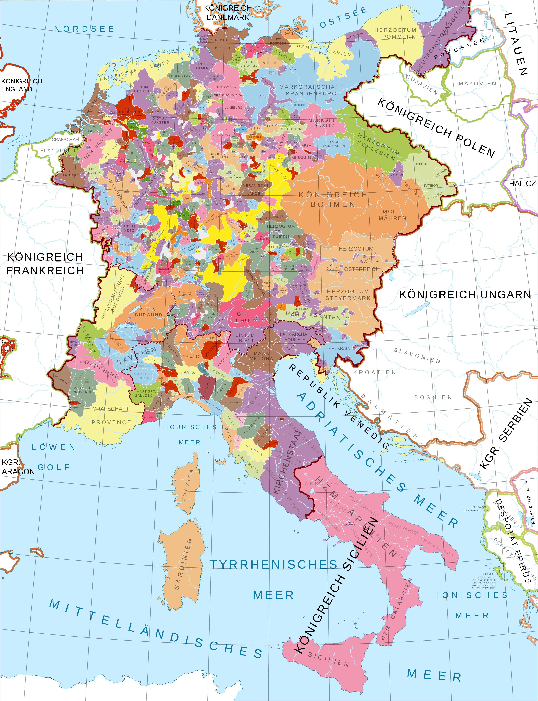So when we determine how country A should take territory from country B, we are engaging in an optimization problem:
- country A receieves approximately the amount of territory as how much it won the war (\(0 \leq p \leq 1\))
- country A doesn't split up its own territory
- country A doesn't split up country B's territory unless it needs to (to achieve the first objective)
- country A doesn't make its territory too elongated
We can do this by stochastically building (with some heuristics) \(K\) different configurations of nodes to take until we reach the proportion of territory to take \(p\). Then we look for the best configuration to maximize the territory taken given that it satisfies the other requirements (minimize number of pieces country B is split into). We can choose \(K\) to be higher to increase the quality, and lower to increase performance based on testing.
Title-Placing
Another problem is placing names over territory. In the case of a simple convex piecewise linear polygon, placing a title (which fits inside an inscribed rectangle) on the shape is relatively simple. However, since the territory in the game is a union of arbitrary polygons, it is not necessarily convex or even connected as a shape.
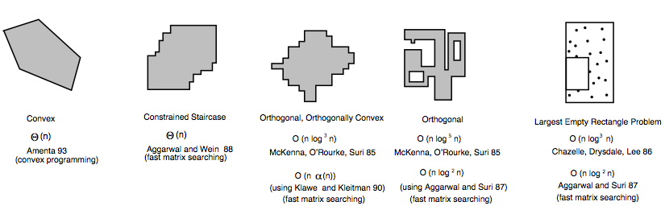First, we split the territory into its components (connected subgraphs), then for each component (or just the biggest one) we will try to place an inscribed title over it.
In the general case this is called the "maximum area inscribed rectangle". The general case is \(O(n^3)\) where \(n\) is the number of vertices of the polygon. However, in our case, we need only a "fuzzy" solution that can overlap outside of the polygon some, as long as it fulfills some other optimization requirements.
We want to maximize the title's size (up to a limit) while optimizing a number of requirements at the same time:
- it shouldn't overlap other country's territories too much
- it shouldn't overlap other country's titles too much
- it shouldn't be too large or too small
- it shouldn't overlap into "holes" in a country's territory
- it shouldn't overlap into empty space too much
- and it should be the right height to width ratio for the text being displayed
- this algorithm should be able to be run on each government with 500-2000 nodes in less than ~5ms on an average computer
For example, in the below map, red has a hole in its territory where a different government controls territory, so it shouldn't overlap there.
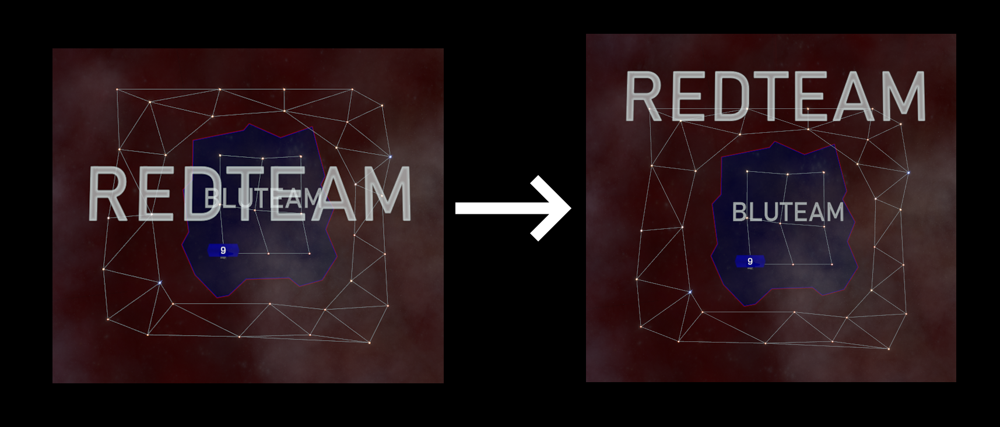To do this, we can do an iterative method starting from a bounding box of every connected component of the territory, and iteratively make the title's box smaller using three different "moves": We can "push inwards" to make the box smaller, split the box in half and pick the best half, and translate the box. We use these moves until we locally maximize the fulfillment of the objectives, quitting if there is no apparent way to reach a valid solution.
We can partition the nodes into squares to precompute how many nodes are in each region, and how many belong to each government, then scale the size of the boxes based on empirical performance. This is analogous to spatial partitioning algorithms for collision detection.